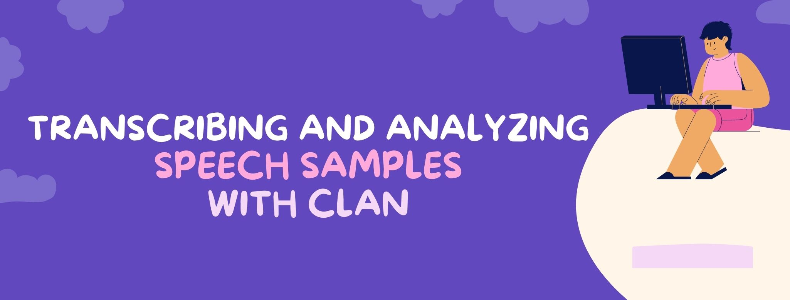
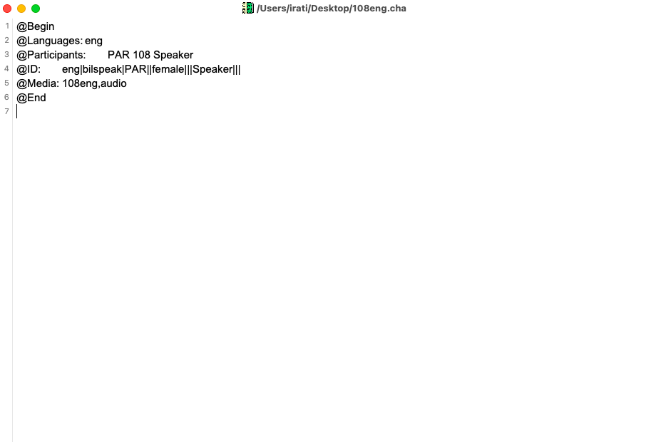
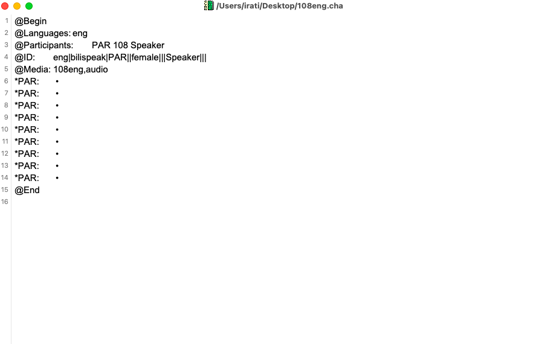

In a previous blog post, I wrote about automatic transcription software that you can use to speed up your transcription process. However, chances are that you also want to analyze what you transcribe if you're working on a research project. Measures such as words per minute or lexical diversity scores are quite common in linguistics research. In this blog post, I introduce you to CLAN, a software that will help you with both transcription and analysis.
CLAN is one of the two software available from TalkBank, a large collaborative project that seeks to document and analyze spoken language (the second software is Phon, which I won't discuss in this blog post).
CLAN consists of two main parts or functions. The first one is an editor, similar to a plain text editor but better, where you transcribe and annotate your data. The second one is a set of data analysis programs which will help you analyze your data by calculating the various measures you're interested in. I explain both functions below.
Although the CLAN editor looks extremely simple, it is way more than a plain text editor, as it allows you to enter some codes that will improve your transcription process.
Before you start transcribing, you have to add a header on top of the document in order to link the transcription file to the audio file as well as to add some information about the person (or people) who are talking in the audio. A sample header looks like this:

Notice that all lines begin with an @ followed by a word and, in some cases, some values associated to it. This header tells us that there is only one speaker in the audio file who speaks English (eng), is a female (|female|), and who corresponds to participant 108 in our dataset. Also, the audio file linked to this transcription file is named 108eng.
All the codes used in the CLAN editor follow the CHAT format, which was also developed by the TalkBank team. To learn more about these codes and what they mean, you can check out the CHAT manual (tip: a shorter version of this manual can be found here).
Once you have entered all the information required in the header, it's time to start transcribing!
Simply place your cursor at the end of the @Media line and press F5. Your audio will suddenly start playing while you are still in the CLAN editor. Now, every time the speaker finishes an utterance, you will have to press the space bar so the cursor jumps to the next line. At this point, a black dot will appear in each line after you press the space bar. You would think this makes no sense at all, but it does!
Once you reach the end of the audio file, you will have a list full of black dots. Each dot represents one utterance, which you will have to link a particular speaker in your audio. For this, place your cursor next to a dot and add the speakers manually from the Tiers tab. The result should be something like this (note that this file contains only one speaker):

Now, you can finally work on transcribing your audio. To do this, open the Walker Controlled tool (it should be under the Window tab) and place your cursor next to one of the dots. Then, press F6. The utterance linked to that specific line will start playing automatically so you can transcribe it. Here, you can adjust the Walker Controller tool to facilitate your transcription process by setting it up so that each utterance is repeated twice, for example. You can check out the manual again to learn about all the features associated to Walker Controller.
The manual also contains additional information describing how to code certain phenomena commonly found in spoken language. For example, how should errors be coded? and pauses? and what if a speaker repeats a word twice?
The last step of the process is to analyze the transcription, since that's the reason why we were using CLAN in the first place.
There are several measures you can calculate using this software, and unfortunately I can't cover all of them in this blog post. In fact, there is a separate manual where you can find a list of measures and how to use the software to calculate them.
Usually, the analysis process consists of opening the Commands tool (under the Window tab) and entering the appropriate code to calculate what you want (of course, this code is available in the manual I mentioned).
Once you're done with your research project (everything is transcribed and analyzed), you might be interested in contributing your data to an online database so that other researchers can access them.
This is actually one of the main reasons why the TalkBank project started. There are currently several data banks organized by categories, so if you're interested, you can add your data to one of those repositories. Hundreds of researchers working with data in multiple languages have already contributed to the TalkBank project. You can find a list with all the data banks here.
You can read the instructions for contributing data here, or read this paper by Brian MacWhinney, the project leader, on the relevance of TalkBank for understanding spoken language.